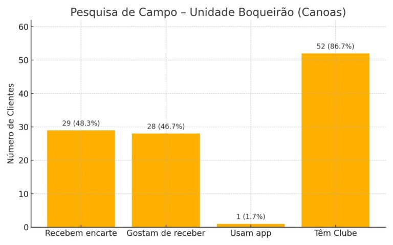
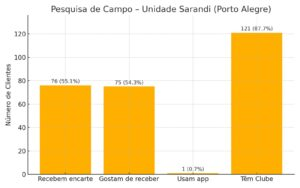

Em um cenário cada vez mais digital, uma pesquisa de campo mostrou que o contato físico continua sendo um dos fatores mais relevantes para gerar conexão no varejo.
Nos dias 5 e 6 de junho, a equipe da MOBI Comunicação esteve em campo realizando uma pesquisa com consumidores em duas regiões metropolitanas do Rio Grande do Sul.
O objetivo foi direto: entender como o público realmente se conecta com a comunicação no ponto de venda.
1. Ouvir para evoluir
Com mais de 190 consumidores entrevistados, os dados revelaram um padrão claro: o material impresso ainda é altamente valorizado.
Mais de 95% dos consumidores que recebem encartes afirmaram gostar desse formato de comunicação.
O encarte físico continua sendo um dos canais mais fortes de engajamento no varejo.

2. Digital ainda não domina todos os públicos
Um dado que chama atenção é a baixa adesão ao digital em determinados perfis de consumo.
Apenas 1% dos entrevistados indicaram o aplicativo como principal meio de acesso às ofertas.
Isso evidencia que estratégias exclusivamente digitais podem não alcançar todo o público — especialmente no varejo alimentar.

3. Fidelização em alta
Outro destaque foi o alto índice de participação no Clube de Vantagens.
- Alta adesão entre os clientes frequentes
- Comunicação bem posicionada
- Potencial forte de fidelização
- Oportunidade de integração com ações presenciais
Os dados mostram que, quando bem comunicado, o programa se torna um canal eficiente de relacionamento com o cliente.
4. Oportunidades na distribuição
A pesquisa também revelou um ponto crítico: muitos consumidores não recebem os encartes, mesmo sendo clientes ativos.
Grande parte desses casos envolve moradores de condomínios fechados ou regiões próximas que não estão no mapa de distribuição.
Ajustar a rota de distribuição pode significar aumentar diretamente o fluxo de clientes.
5. Presença estratégica é o diferencial
Com base nos dados coletados, a MOBI propôs ações práticas para potencializar os resultados:
- Expandir a cobertura da panfletagem
- Ativar campanhas presenciais para novos públicos
- Integrar ações físicas e digitais
- Criar ativações temáticas (como datas comemorativas)
Mais do que distribuição, trata-se de inteligência de rua aplicada ao marketing.
Cada abordagem, cada interação e cada ajuste na estratégia contribui para construir vínculos reais entre marca e consumidor.
O futuro do marketing não é só digital. É humano, local e estratégico.
Quer entender melhor o seu público?
Leve sua comunicação para o campo e descubra o que realmente gera resultado no seu negócio.
Falar no WhatsApp